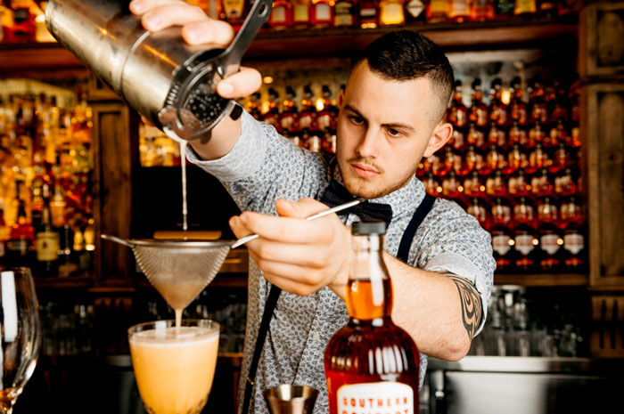

Краткий справочник бармена : Приготовление смешанных напитков.

Прежде всего следует знать, что в зависимости от крепости алкогольные смешанные напитки приготавливают в большем или меньшем объеме на порцию.
Коктейли с большим содержанием алкоголя-крепкие, десертные и слоистые приготовляют в объеме от 50 до 100 мл. Смешанные напитки, содержащие в своем составе небольшое количество алкогольных компонентов (игристые коктейли, коктейли с яйцом, крюшоны и т. д.), — в объеме от 100 до 200 мл и более.
Качество приготавливаемых напитков, естественно, в первую очередь зависит от применяемых ингредиентов. Например коктейль, приготовленный с коньяком «КВ» или «Юбилейный», будет, конечно, иметь более приятный аромат, чем такой же коктейль, приготовленный на коньяке «Три звездочки».
В большинстве случаев для приготовления смешанных напитков необходим пищевой лед. Используют лед различной степени измельчения. Для смешивания напитков, приготавливаемых в малом объеме, лучше брать кусочки льда величиной с грецкий орех: такой лед не успевает быстро растаять и заметно разбавить напиток.
Для приготовления коктейлей с фруктами, игристых, крюшонов и других напитков, приготовляемых сравнительно большими дозами, используют мелкодробленный лед (ЛЕД-ФРАПЕ). Для быстроты обслуживания крупные и мелкие куски льда рекомендуется хранить на рабочем месте в разной посуде — в ведерках из нержавеющей стали, на дно которой вставляют металлическую сетку для стока талой воды. Еще лучше хранить лед в специальных термосах.
ЛЕД-ФРАПЕ обычно приготавливают заранее. Для этого кусочки льда заворачивают в чистую плотную ткань и дробят при помощи деревянного молотка. Все компоненты для коктейлей, подаваемых в охлажденном виде, предварительно охлаждают, благодаря этому в процессе смешивания требуется совсем немного льда.
Иногда перед подачей напитков охлаждают и посуду. Делают это таким образом: стаканы или бокалы ставят кверху дном на лед и держат до тех пор, пока их стенки не запотевают. Можно охладить бокал и другим способом: положить в него кусочек льда, взять за ножку большим и указательным пальцами и сделать несколько вращательных движений так, чтобы кусочек льда вращался в бокале. Затем образовавшуюся воду слить, заполнить стакан напитком и сразу подать посетителю.
Некоторые наполнители для смешанных напитков необходимо приготавливать заранее. Одним из компонентов многих напитков является сахар. Чтобы не тратить времени на растворение сахара, удобнее использовать сахарный сироп. К тому же при употреблении сиропа напиток не мутнеет. Если в рецептуру коктейлей входит порошок какао, целесообразно также заранее заготовить шоколадный сироп, за исключением тех случаев, когда тертый или строганый шоколад или порошок какао используют для украшения коктейлей и посыпают им напиток.
СИРОПЫ
САХАРНЫЙ СИРОП: 1 кг. сахара растворить в 1 л. горячей воды и довести до кипения, после чего удалить образовавшуюся пену, сироп процедить и перелить в графины.
ВАНИЛЬНЫЙ СИРОП: в готовый сахарный сироп добавить ванилин.
ШОКОЛАДНЫЙ СИРОП: смешать 500 граммов сахара, 125 граммов сливочного масла и довести до кипения; в 1/4 л воды развести какао, при непрерывном помешивании ввести в кипящую жидкость и хорошо прокипятить. Затем дать сиропу несколько остыть, в теплом виде разлить в бутылки и плотно закупорить.
Вина, используемые для приготовления смешанных напитков, не должны иметь осадка. Если же они имеют осадок, их следует профильтровать через плотную ткань. Это относится прежде всего к приготовлению крюшонов и пуншей, в состав которых входят ординарные столовые вина.
Важно также помнить, что хороший вкус коктейлей, в состав которых входят фрукты, овощи и яйца, возможен только при абсолютной свежести этих продуктов.
В приведенных ниже рецептурах смешанных напитков предусмотрено применение только пастеризованных сливок 35-% жирности (для приготовления взбитых сливок).